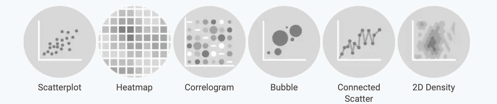
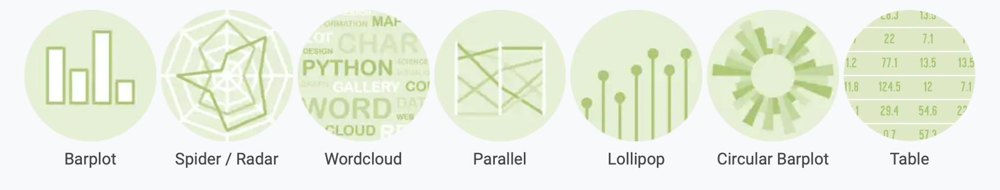

Graph Gallery
👋 Bizard 是一个为生物医学研究量身定制的高级可视化代码综合存储库。
该工具包包括各种各样的图表选项，从变化分布到交互式可视化，系统组织以满足生物医学数据分析的独特需求。建立在强大的基础上，每个示例都包含可重复的 R 代码，详细注释和现实世界数据集，以确保可访问性和实际应用。
借助初学者和经验丰富的研究人员的资源，Bizard 使用户能够创建直观，科学严格且视觉上令人信服的输出，从而在生物医学领域中推进数据可视化标准。
UNDER CONSTRUCTION [DEMO ONLY]
Distribution Gallery
Correlation Gallery

Ranking Gallery
